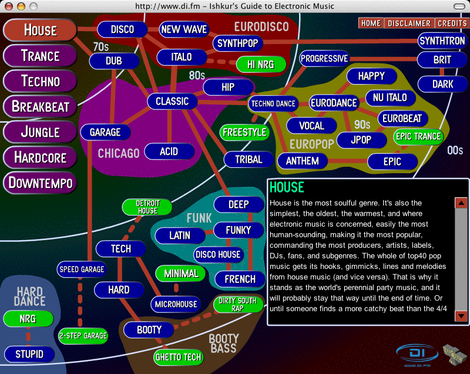

Analyst Gene Munster predicts that
in 5 years Apple will be shipping 1 terabyte iPods for $500 each.
That means I'll be able to carry around a quarter-million songs in my
pocket. At the current iTunes rate of $.99 per song thats about a
quarter million dollars worth of music. Of course, we may be
filling this up with episodes of Lost or video pod casts, nevertheless,
it will be easy to carry a substantial fraction
of all available commercial music wherever you go. Now, how is shuffle play going
to work with that?
Monday Nov 28, 2005
Friday Nov 25, 2005
Music Thing describes how Andy Moore made the THX sound with
20,000 lines of C code. Interesting fact is that the program never
produced the same sound twice (it was seeded with random numbers), so
the signature THX sound was not reproduceable.
Tuesday Nov 22, 2005

Continuing our look at sources of music metadata ... we now visit MusicBrainz. MusicBrainz is a 'community music metadatabase that attempts to create a comprehensive musc information site.' MusicBrainz has done something that the All Music guide and MusicMoz have not done, they've incorporated music fingerprinting technology that will provide a unique MusicBrainz ID for any music file (regardless of encoding or format). In some sense, MusicBrainz is a lot like GraceNote or FreeDB in that they focus on providing information required to properly tag an MP3 file, but unlike GraceNote and Freedb they work not just with audio CDs but (in theory) any music track.
The MusicBrainz data is entirely community generated and are released under a creative commons license or into the public domain and is available for download.
MusicBrainz provides detailed album and track information for most mainstream artists. It doesn't provide much beyond this however. If you look up a track in MusicBrainz, you'll find:
- The MusicBrainz ID
- The track length
- Link to the album page
- Link the artist page
- A one-liner description (if you are lucky) of the band
- Links to 'official band homepages' and wikipedia entries
- Albums lists
- A limited set of related artists
- Genres
- Reviews
All in all, MusicBrainz is a real good thing. They provide free access to the data, provide SDKs for apps to use to hookup to the DB, and provide excellent documentation. Hopefully overtime, the community will be able to fill out some of the gaps in the MusicBrainz data.
Tuesday Nov 15, 2005
This week, Seattle is hosting SC/05, the yearly conference on high performance computing, networking and storage. A new initiative this year at SC/05 is HPC Analytics. The goal of this initiative is to highlight "rigorous and sophisticated methods of data analysis and visualization used in high performance computing by showcasing powerful analytics applications solving complex, real-world problems."
One of the HPC Analytics finalist is a submission by Dr. Stephen
Downie from the University of Illinois at Urbana-Champaign called Terascale Music Mining. The
project's mission is the 'creation of secure, accessible, terascale
collections of music materials in a variety of audio, symbolic and
metadata forms. These collections, coupled with a set of standardized
experimental tasks and standardized evaluation metrics, will allow
members of the international MIR/MDL research community to participate
in the newly created, TREC-like, Music Information Retrieval Evaluation
eXchange (MIREX) contests.'
Dr. Downie's submission includes some work that Kris West and I did over the summer as part of the MIREX 2005 artist identification submission. For MIREX 2005, we created a system that analyzes a set of MP3 audio files and attempt to identify the performing artist of the audio based only upon the audio. The system is implemented in Music-to-Knowledge (M2K) an open-source system for developing large-scale music analysis systems. The system is a good example of the kind of problem that can only be solved with large or distributed computing systems. Our M2K submission took about 10 hours to analyze 1500 audio files. If we wanted to scale the same algorithms up to an iTunes-sized music collection, we'd need about a year of CPU processing time to perform the analysis. Two things seem pretty clear to me. Music analysis is going to be a big part of helping people find relevant music (i.e music that they want to listen to), and companies that want to do this sort of analysis are going to need some pretty big and fast computers.
Saturday Nov 05, 2005
On my nightstand this week is the book called The Future of Music.
This book offers a look at what changes are going to happen in the
music industry over the next 10 years. Author David Kusek does an
excellent job describing the current state of the music industry, how
we got to where we are, and what is going to change. Kusek says that
soon: 'Music will flow like water'. We will have easy and
ubiquitous access to music, and just like water it will be (or at least
seem to be) free. That doesn't mean that people won't make money
selling music. Just like Evian can make a profit selling bottled
water at a price more expensive than gasoline, there will still be a
way for people to make money selling music. It's just that the current
recording industry won't hold the keys to the kingdom as they do
now. An excellent book for anyone in the business of bringing
music to the consumer. (Thanks Matthew for the suggestion).
Thursday Nov 03, 2005
Yesterday, I described the All Music Guide, one of the best sources of music metadata. Unfortunately, all this good data is not free. However there are some good sources of music metadata that are free. Now these sites don't provide the as comprehensive a set of data, but they still provide a good place to start.
One good source of free metadata is MusicMoz. MusicMoz is a "comprehensive directory of all things music, edited by volunteers." The data is available for use under a very friendly Use License.
MusicMoz provides full dumps of their database in XML format, (about 10 Megabytes compressed). However, the latest data dump is almost 4 months old (compare that to the daily updates that the All Music guide will give you). You can also get access to the data via a web services interface. Here's the results for a query for Franz Ferdinand. You may notice that the latest album by Franz Ferdinand - "You could have it so much better" is not listed in the MusicMoz database. That is the biggest problem with MusicMoz, the data is a bit thin. Compare the All Music Guide data for Franz Ferdinand to the MusicMoz data for Franz Ferdinand. There's quite a difference.

MusicMoz does have a pretty good search query language, it contains a number of operators that let you restrict queries to various fields.
All in all, MusicMoz has pretty good data, gives you pretty good access to it, has an excellent license and the price is right.
Wednesday Nov 02, 2005
If you are building any sort of music search system, sooner or later you are going to need a good source for music metadata such as artist, albums, tracks, related artists, biographies, reviews, album art etc. One of the first places to look for good metadata is the All Music Guide. AMG has been in the business of supplying music metadata since 1992. The AMG database is probably one of the most complete database. They provide detailed artist biographies, discographies, group membership, similar artists, influences, song covers and much more. There's a whole lot there. However, it is a commercial database. There's no free access to the data except via the website. If you want access to the data you have to get a license from AMG and it is not cheap. You could probably buy about 30 Sun Ultra 20s for what you'd pay for a year's access to the AMG database.
The All Music guide is the Cadillac of music metadata. It has all of the data that you'd ever want, but you have to pay for it.
Tuesday Nov 01, 2005
There's a nifty video of last the Sun Labs open house on the sun.com main page. Just click on the 'At Work in Sun Labs' link on the right-hand-side of the page ... or you can download the mpeg-4 format version. The Search Inside The Music project gets a mention ... as does the The Search Guy's advanced document classification project. I remember when they shot the video, I was busy trying to get a proper xorg.conf for the demo workstation that would drive the 24" panel that was connected to it. When they came around to shoot the video, I had just barely got things working ... the astute observer may notice that I am using Tom's Window Manager. Shortly afterward, the search guy used his nifty search engine to find me an xorg.conf that fit, and I was able to give the demo with the full glorious JDS. Thanks again Steve!
Thursday Oct 27, 2005
Remember the old Napster? One of the best things about the original Napster was that you could browse someone else's music collection and sample music. If you found someone that had lots of music that you liked, you could explore their collection and find music that you hadn't heard before. It was a great way to find new music.

Mercora is all about discovering music ... there's lots more to Mercora than just peeking in on your friends music ... worth checking out (Windows only for now ...)
Sunday Oct 23, 2005
In 1957, Arthur C. Clarke predicted the automated content-based analysis of music (so prevalent in field of Music Information Retrieval today) in the short story called The Ultimate Melody. In this story, scientist Gilbert Lister:
"took hundreds of the really famous tunes in classical and popular music and analysed their structure - their morphology, as he put it. This was done automatically by a big harmonic analyser that sorted out all of the frequencies.
It is a cautionary tale however, not all goes well for Gilbert, MIR researchers should take heed.
The Ultimate Melody can be found in Tales from the White Hart published in 1957. (Thanks to Sun Labs' Tim Curry for pointing me to this story).
Tuesday Oct 18, 2005
I've been spending a good deal of time delving into the jAudio package from McGill University. jAudio is an open source package for extracting features from music. The features can then be processed by other packages such as Weka, M2K or ACE. The authors of jAudio have done a very good job of architecting, coding and documenting the jAudio system. The jAudio code has been just super to work on. I've added some code to jAudio to allow us to distribute our feature extractions over a large number of CPUs. Since feature extraction can be a very CPU-intensive task, being able to distribute the task is key. With jAudio we can process audio at about 10 seconds per 3 minute song so processing a 5,000 song collection will take about 14 hours, but with the extended jAudio it is just as easy to run this task on 10 CPUs and get it done in 2 hours, or run it on a 1000 node system and get the job done in just a couple of minutes.
You can read more about jAudio in Cory McKay's paper jAudio: Towards a standardized extensible audio music feature extraction system
Sunday Oct 16, 2005

Ishkur's Guide to Electronic Music is worth a visit. This nifty website lets you explore and listen to the nearly 200 different genres of electronic dance music. Each top level genre (house, trance, techno, etc) is broken down into a network of subgenera, with clusters, dependencies and hierarchies represented. There's lots of info presented in a visually engaging way, but the best part of the site is being able to listen to examples of all of the various genres. If you don't know the difference between JPop and Eurodance, this is the place to go.
Wednesday Oct 12, 2005
The weekend I took another look at the MusicMagic mixer by Predixis. My first attempt
to use this system failed (apparently the 64-bit linux is not on the
top of their priority platforms), but I do have a Mac Mini, and they
support that so I tried it again on this platform. This time with much
better results.
Using MusicMagic mixer is very easy to use. You point it at your music collection and it will go off and fingerprint and analyze the music. The fingerprinting process (similar to what MusicBrainz does) takes about 3 to 5 seconds per song. The fingerprint is used to query the Predixis database to see if an analysis for the song has already been performed, if so, the analysis portion can be skipped. If no analysis is found, then the song will be analysed and a number of musical features are extracted. The analysis is a very CPU intensive process and typically takes about 80% of the playing time. I pointed MusicMagic mixer at my collection of music (about 4,500 songs). Unfortunately, the fingerprinter did not findi many matches so most of my music will need to be analyzed. For this modest sized collection, this will take nearly 2 weeks of continuous CPU time on my poor little Mac Mini.
Fortunately, I don't have to wait until all songs are analyzed before I can play with the system. I can ask MusicMagic mixer to create an' 'instant mix' and it will generate a playlist of 10 songs that are acoustically similar. It does this by selecting a song at random from my 1500 analyzed songs and then selecting the 9 songs that are nearest to the seed song in this music similarity space. If I like the playlist generated, I can toss it into iTunes and listen to it, or I can easily generate another one. Once the initial analysis is performed, MusicMagic mixer is very fast, the playlists were generated instantly. The generated playlists, so far, seem to be quite good (but it is hard to tell with only 1500 songs analyzed). The songs in a playlist are typically in the same genre, and often include several songs by the same artist, but also include a variety of artists. I occasionally will encounter a 'clunker', a song that just doesn't belong (a harpsichord piece after a delta blues song). I'm looking forward to using the system once the full analysis is complete to see how well it performs.
The Predixis folks seem to know what they are doing and they seem to be hooking up with all the right partners. It will be interesting to see if they can make a go of this. The music recommender space is starting to attract a number of players, big and small, Predixis is the only one that is using automatic music analysis to drive recommendations, so they've carved out an interesting niche.
Monday Oct 10, 2005
Over 20 years ago, Computer Science Icon Donald Knuth published his in depth analysis of the complexity of song lyrics: The Complexity of Songs. In this paper, Professor Knuth traces the efforts of lyricists over the ages as they seek to reduce the amount of memory required to represent a (seemingly) complex and interesting set of verses. First, Knuth gives us the basic lemma and proof and then begins with the historical survey showing how the lyric complexity has been slowly reduced from N (the song length) to N^(1/2) (old MacDonald) and 1 / log(n)^(1/2) for 'the 12 days of Christmas'. The big breakthrough of course occurred with the "m Bottles of Beer on the wall" that reduced lyric complexity to O(log n). Knuth concludes with an analysis of the latest attempts (as of 1984) in lyric complexity reduction by Mr KC of the sunshine band (uh huh uh huh).
SunLabs' Guy Steele has continued to push ahead with this area of research. He has produced the Telnet song with a complexity that approaches O(1).
Sunday Oct 09, 2005
I just finished reading John Battelle's The Search. One interesting tidbit from the book: Battelle asked a senior manager why Google doesn't focus on searching and selling music. His answer was: Sergey doesn't listen to much music.
This blog copyright 2010 by plamere